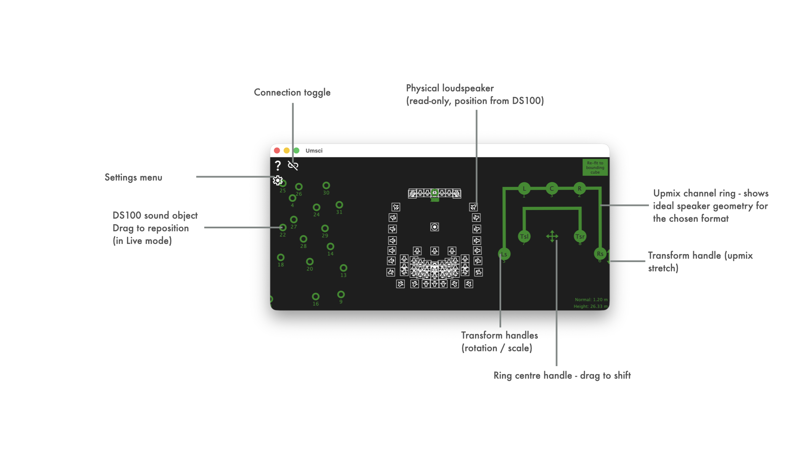
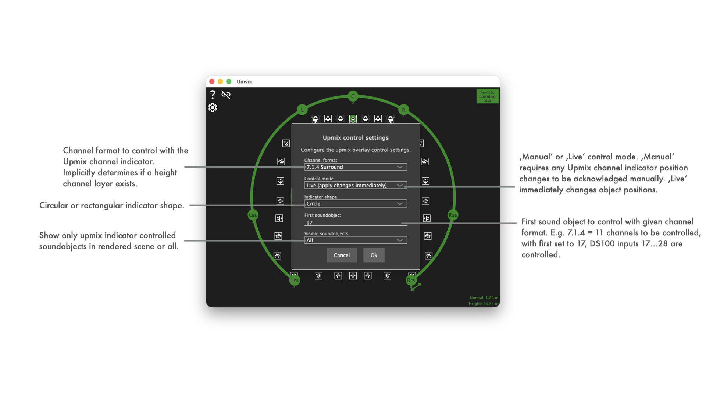
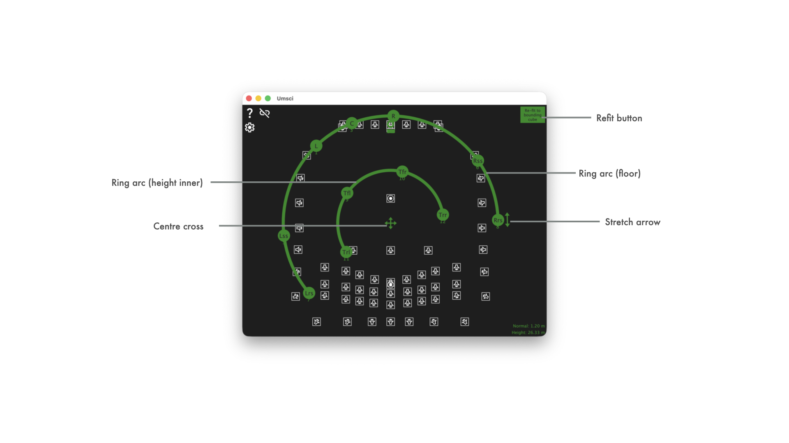
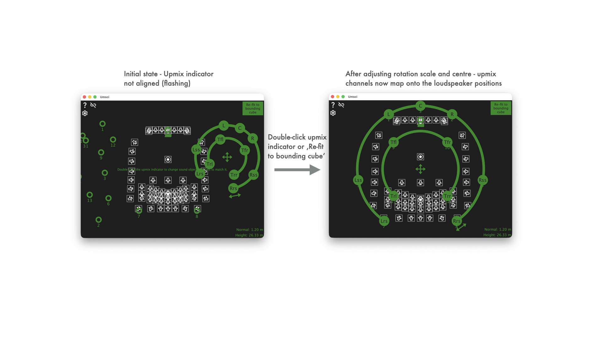
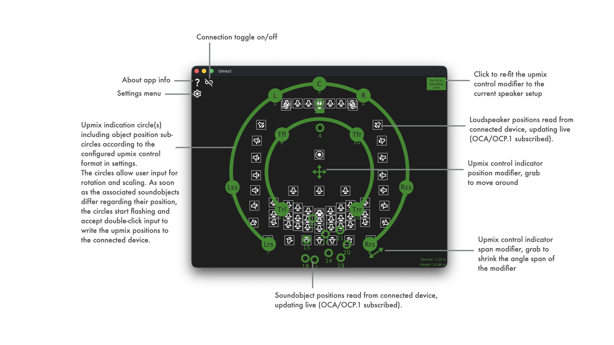
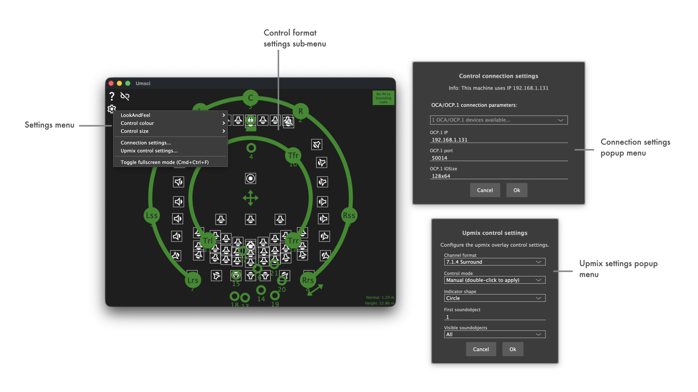

|
Umsci
Upmix Spatial Control Interface — OCA/OCP.1 spatial audio utility
|
|
Umsci
Upmix Spatial Control Interface — OCA/OCP.1 spatial audio utility
|
See LATEST RELEASE for available installer packages or join iOS TestFlight Beta:
Full code documentation available at
Umsci is a utility that connects to a d&b Soundscape signal processing engine (DS100) via the OCA/OCP.1 network protocol and lets an operator visualise and control soundobject positions in real time.
Its primary focus is the specific workflow of mapping an external upmix renderer's virtual output channels onto the physical room layout managed by the DS100. An upmix renderer (e.g. a DAW plug-in or hardware processor) takes a stereo or surround bus and produces a set of spatialised output channels that should be fed into consecutive DS100 sound objects. Umsci gives the operator a graphical handle on that block of sound objects, letting them rotate, scale, stretch and shift the entire virtual speaker ring to best match the physical loudspeaker array — while watching how the actual DS100 positions track the intended geometry.
The application subscribes to all soundobject and loudspeaker position values published by the DS100 and renders them on a shared 2D view that blends three overlaid layers: the physical loudspeaker layout (read-only), the live soundobject positions (interactive), and the upmix indicator control ring.
Its source code and prebuilt binaries are made publicly available to enable interested users to experiment, extend, and create their own adaptations.
Use what is provided here at your own risk!
This walkthrough assumes you have a d&b Soundscape DS100 signal processing engine reachable on your local network and an upmix renderer (DAW plug-in, hardware processor, or similar) feeding output channels into consecutive DS100 sound objects. If you only want to monitor or edit soundobject positions without the upmix workflow, steps 3 and 4 are still fully relevant — simply ignore the upmix-specific parts.
Open the Settings menu by clicking the gear icon (⚙) in the upper-left corner of the Umsci window, then choose Connection settings….

Enter the IP address of your DS100, leave the port at the default 50014, and set the IOsize to match your DS100 license (64x64 for L, 128x64 for XL) — a mismatched IOsize will prevent the connection from completing. The Discovered devices drop-down lists DS100 devices found automatically via mDNS; selecting one fills in the address and port.
Press Ok to store the settings. See Connection settings for the full field reference.
Click the connection toggle button in the upper-right corner of the main window. The button cycles through disconnected → connecting → connected states.

Once the button settles into the connected state the three scene layers populate automatically:
If the button does not reach the connected state, double-check the IP address, port, and IOsize values from Step 1. A mismatch between the IOsize and the actual DS100 license is the most common cause.
The main view is a shared 2D top-down representation of the physical room as configured in the DS100. All coordinates use the DS100's normalised 0–1 space (X = left → right, Y = front → back).

Key things to notice:
| Element | What it tells you |
|---|---|
| Loudspeaker icons | The physical layout of the room as seen by the DS100. They do not move unless you change the DS100 configuration elsewhere. |
| Soundobject circles | Live positions of all DS100 inputs. Their colour matches the chosen Control colour. |
| Upmix ring arc | The idealised geometry for the selected immersive format (Stereo → 9.1.6), centred at the ring's transform-adjusted origin. |
| Coloured dots on the ring (Live mode) | Actual DS100 positions for the upmix channels. A flashing dot means Umsci just sent an update and is waiting for the DS100 echo. |
Use the mouse wheel or a trackpad/touch pinch to zoom, and a modifier key + scroll to pan — see Zoom and pan for all input options.
The upmix indicator ring is the core workflow tool. This step walks through configuring it and using its interactive handles to align the virtual speaker ring with the physical room layout.
Open Settings → Upmix control settings…. The two settings that matter most at first are:
7.1.4 for a 12-channel Atmos bed).17 if the renderer occupies channels 17–28).Start with Control mode set to Manual so you can preview adjustments before committing them, and leave Indicator shape at Circle unless your room is clearly rectangular. See Upmix control settings for all options.

Press Ok. The ring updates to show the correct number of channel spokes and labels for the chosen format.
Use the five interactive handles on the ring to match the idealised geometry to the physical loudspeaker layout visible in the bottom layer. A practical starting point: click the Refit button (top-right of the ring) to auto-fit the ring to the loudspeaker bounding box, then fine-tune rotation and centre offset to taste. Double-click any handle to reset it to its default. See Upmix indicator handles for a description of all five handles.

See Control modes for a full comparison.

Once the ring is aligned and positions are committed, Umsci will hold the subscriptions to all DS100 position values. Any external position change (from a third-party controller, automation, or another Umsci instance) will be reflected live in the scene view. Any conflicting changes will set the upmix indicator back to flashing state to visualise that it is not aligned.
The primary use case: an external upmix renderer outputs N channels (e.g. 16 channels for a 7.1.4 Atmos bed) into DS100 sound objects starting at a configurable channel index. Umsci shows the idealised ring geometry for the chosen channel format (Stereo through 9.1.6) superimposed over the physical loudspeaker layout. The operator can interactively adjust rotation, scale, height and front/rear stretch to align the virtual ring with the available speakers, and in Live mode the DS100 positions are updated in real time as the handles are dragged.
All DS100 sound objects (up to 64 / 128 depending on the M / L / XL license installed in the signal engine) are rendered as draggable circles. Even without the upmix focus, Umsci provides a quick spatial overview of the full object set and allows individual objects to be repositioned from any connected device.
Using the --noconfigui and --noupdates command-line flags, Umsci can be locked into a minimal, touch-friendly control surface where settings dialogs and update notifications are hidden. This is suited for fixed installations where the operator should only move objects and adjust the upmix transform, without access to connection or configuration options.
Umsci runs natively on iOS/iPadOS. The full touch interaction model — including two-finger pinch zoom on the scene view — is supported. An iPad can act as a wireless remote control surface for a DS100 on the same network, using Zeroconf/mDNS auto-discovery to find the device without entering an IP address manually.

The main view shows three transparent layers stacked on top of each other — all sharing the same coordinate space and zoom/pan state:
| Layer | Content |
|---|---|
| Bottom | Loudspeaker positions read from the DS100 (SVG icons, display only). |
| Middle | Soundobject positions, updated live via OCP.1. Draggable in Live mode. |
| Top | Upmix indicator ring with interactive transform handles (see below). |
The connection toggle button (top-right) shows the live OCP.1 connection state and can be clicked to connect or disconnect.
The top layer renders a ring (circle or rectangle path) representing the ideal speaker positions for the chosen immersive format. Five handles allow the ring geometry to be adjusted:
| Handle | Gesture | Effect |
|---|---|---|
| Ring arc (floor) | Drag tangentially | Rotates the ring (±180°). |
| Ring arc (height, inner) | Drag radially | Scales the height ring relative to the floor ring. |
| Centre cross | Drag | Shifts the ring centre in XY. |
| Stretch arrow | Drag along arrow | Compresses or expands the front/rear angular spread. |
| Refit button (top-right) | Click | Snaps the transform so the ring fits inside the loudspeaker bounding box. |
Double-clicking a handle resets that parameter to its default value.
When Live mode is active, coloured dots show the actual DS100 source positions for the upmix channels overlaid on the ideal ring, allowing the operator to see alignment errors and oscillations in real time. A flashing dot indicates that the DS100 is echoing back position updates (normal behaviour during active control).
The scene view supports zoom and pan on all platforms:
| Input | Action |
|---|---|
| Mouse wheel (scroll up/down) | Zoom in/out centred on cursor position. |
| Trackpad two-finger pinch | Zoom in/out centred on gesture midpoint. |
| Two-finger touch pinch (iOS/iPadOS) | Zoom in/out centred on gesture midpoint (native UIKit gesture recognizer). |
| Mouse wheel while pressing a modifier key | Pan horizontally / vertically. |
The zoom level is shared across all three layers so they stay aligned.
The Control mode setting (in Upmix control settings) governs how soundobject position changes originating from Umsci are sent to the DS100:
| Mode | Behaviour |
|---|---|
| Manual (double-click to apply) | Dragging or adjusting handles updates the on-screen geometry locally. The new positions are only sent to the DS100 when the user double-clicks the ring or handle. Use this mode when you want to preview a new layout before committing it. |
| Live (apply changes immediately) | Every position change is sent to the DS100 in real time as the user drags. DS100 echo-backs are automatically absorbed so they do not produce spurious visual feedback. |

The gear button (top-left) opens the settings menu. Available options:
| Group | Options |
|---|---|
| Look & feel | Follow host / Dark / Light. |
| Control colour | Green / Red / Blue / Anni Pink / Laser. |
| Control format | Stereo, LRS, LCRS, 5.0, 5.1, 5.1.2, 7.0, 7.1, 7.1.4, 9.1.6 — sets the upmix ring channel geometry. |
| Control size | S / M / L — scales the soundobject and speaker icons. |
| Connection settings… | OCP.1 IP/port/IO-size configuration (see below). |
| Upmix control settings… | Upmix mode, shape, channel-start and visibility configuration (see below). |
| External control… | MIDI assignment for the six upmix transform parameters (see below). |
| Fullscreen | Toggles fullscreen / windowed mode (also F key or Escape). |
The control format determines how many channels the upmix ring has and which speaker labels are shown (L, C, R, Ls, Rs, Ltf, Rtf, etc.). Supported formats span from simple Stereo (2 channels) up to 9.1.6 Atmos (16 channels).
Opens the Control connection settings dialog. Configure:
50014.<inputs>x<outputs>, for example 64x64 for an L license or 128x64 for an XL license. This controls how many soundobject and loudspeaker subscriptions Umsci creates.Beware: The IOsize defines how many channels are expected to be available on the signal engine, and Umsci will not finish the connection and subscription cycle if this expectation is not met by the actual available device!
Changes take effect on Ok; the connection toggle button in the top-right corner shows the live connection state.
Opens the Upmix control settings dialog. Configure:
17. Subsequent channels are implied consecutively up to the channel count of the selected format.Opens the External control dialog. Allows each of the six upmix transform parameters to be driven by a MIDI continuous controller, enabling control from a hardware surface, DAW automation, or any other MIDI source.
Select the MIDI input device from the combo box at the top of the dialog. The selection is persisted across sessions.
Each parameter has a MidiLearner row that supports both value-range and command-range assignment:
| Parameter | Default range | Description |
|---|---|---|
| Rotation | −180° … +180° | Rotates the entire ring. CC mid-point = 0° (front). |
| Translation (scale) | 0 … 3 | Radial scale of the floor ring. 1.0 = nominal radius. |
| Height translation | 0 … 2 | Height ring radius as a fraction of the floor ring. 0.6 = default (40 % smaller). |
| Angle stretch | 0 … 2 | Compresses/expands front–rear angular spread. 1.0 = uniform. |
| Offset X | −2 … +2 | Shifts the ring centre left/right in units of base radius. |
| Offset Y | −2 … +2 | Shifts the ring centre front/back in units of base radius. |
Click Learn on a row and move a MIDI controller to capture its CC number and value range automatically. The assignment maps the learned CC range linearly to the full parameter range.
Changes are applied only when Ok is pressed; Cancel discards any edits. Assignments are persisted in the XML configuration file.
Note: In Live mode, MIDI parameter changes are immediately forwarded to the DS100 as OCP.1 position updates. DS100 echo-backs are automatically suppressed so that they do not cause spurious indicator flashing.
| Platform | Notes |
|---|---|
| macOS | Desktop app; mouse wheel and trackpad pinch zoom supported. |
| Windows | Desktop app; mouse wheel zoom supported. |
| iOS / iPadOS | Native app; full touch support including two-finger pinch zoom. Safe-area insets (notch, Dynamic Island, home indicator, Stage Manager) are handled automatically. Zeroconf device discovery is available in connection settings. |
All platforms share the same XML configuration format. The configuration file is stored in the platform's standard application data directory.
Two command-line flags simplify locked-down installations (see Command-line parameters):
--noconfigui hides the About, Settings, and Connection buttons so the user can only interact with the scene view.--noupdates disables the startup update check, required in network-restricted environments.On iOS, the app can be distributed via TestFlight or an MDM solution and configured at first launch; subsequent launches restore the persisted XML config automatically.
Umsci has a set of command-line parameters. Parameters are passed directly when launching the executable from a terminal or as part of a launch script.
| Parameter | Description |
|---|---|
--noupdates | Disables the automatic online update check performed by JUCEAppBasics::WebUpdateDetector at startup. Useful in network-restricted environments, automated deployments, or kiosk setups where outbound HTTP requests to GitHub should be avoided. |
--noconfigui | Hides the three configuration buttons (About, Settings, Connection) in the upper-left corner of the UI. Intended for kiosk or embedded deployments where the user should not be able to change settings or disconnect from the soundscape signal engine. |
This section is aimed at developers who want to understand, extend, or adapt the codebase.
The visual output is produced by three UmsciPaintNControlComponentBase-derived components held by UmsciControlComponent, all given identical pixel bounds:
All three inherit UmsciPaintNControlComponentBase which provides:
GetPointForRealCoordinate / GetRealCoordinateForPoint).m_zoomFactor, m_zoomPanOffset) driven by mouse wheel, trackpad pinch, and on iOS a native UIPinchGestureRecognizer (see below).setZoom() / resetZoom() API so that UmsciControlComponent can keep all three layers synchronised via the onViewportZoomChanged callback.onZoomChanged() hook that derived classes override to re-trigger their prerender pass before repaint.UmsciUpmixIndicatorPaintNControlComponent also inherits JUCEAppBasics::TwoDFieldBase, which supplies per-channel angle and label data for any juce::AudioChannelSet (the chosen surround format).
hitTest() is overridden on the sound-objects and upmix-indicator layers to return true only over interactive elements (source circles, ring arcs, handles). The large empty area of both layers is transparent to mouse/touch events, which pass through to the layer below.
The ring geometry is prerendered into juce::Path objects by PrerenderUpmixIndicatorInBounds() whenever the bounds, zoom, or any transform parameter changes. The five transform parameters are:
| Member | Default | Meaning |
|---|---|---|
m_upmixRot | 0.0 | Ring rotation around Z. 0 = front, positive = clockwise (normalised 0–1 = 0–360°). |
m_upmixTrans | 1.0 | Floor ring radial scale factor. |
m_upmixHeightTrans | 0.6 | Height ring radius as a fraction of floor ring radius. |
m_upmixAngleStretch | 1.0 | Front/rear angular spread compression (1.0 = uniform). |
m_upmixOffsetX/Y | 0.0 | Ring centre offset in units of base radius. |
Zoom state lives in UmsciPaintNControlComponentBase:
m_zoomFactor — float, 1.0 = no zoom, clamped to [0.1, 10.0].m_zoomPanOffset — juce::Point<float>, normalised fraction of base content width/height; resize-stable.getContentBounds() applies the current zoom and pan to produce the pixel rectangle that content is rendered into. mouseWheelMove() and mouseMagnify() handle desktop input. Both call onZoomChanged() on the component then fire the onViewportZoomChanged callback which UmsciControlComponent uses to propagate the new zoom state to the other two sibling layers via setZoom() (which is idempotent and does not re-fire the callback).
A simulatePinchZoom(float scaleFactor, juce::Point<float> centre) public method provides the same zoom path for programmatic callers (used by the iOS native pinch path described below).
JUCE 8 routes each finger touch independently to whichever component passes hitTest() at that touch position. Because both the sound-objects and upmix-indicator layers have large hitTest() dead zones, the two fingers of a pinch gesture often land on different components (or no component), preventing JUCE's mouseMagnify() synthesis from firing.
UmsciControlComponent::parentHierarchyChanged() therefore attaches a UIPinchGestureRecognizer (via JUCEAppBasics::iOS_utils::registerNativePinchOnView()) directly to the JUCE peer's UIView the first time a peer becomes available. This gesture recognizer operates at the UIKit layer before JUCE's per-component touch routing, so it fires regardless of which JUCE components the individual fingers hit. The incremental scale and centre point are forwarded to simulatePinchZoom() on the loudspeakers layer, which fires onViewportZoomChanged and synchronises all three sibling layers normally.
Safe-area insets (status bar, home indicator, Dynamic Island, Stage Manager) are managed by JUCEAppBasics::iOS_utils::initialise() / getDeviceSafetyMargins(). The implementation uses UIWindowScene.windows.firstObject (the main app window) rather than the key window, so safe-area queries remain correct when a modal dialog (Alert, connection settings) is open and temporarily becomes the key window.
UmsciAppConfiguration wraps JUCE's XmlDocument-based config file. Classes that need to read/write settings inherit either UmsciAppConfiguration::Dumper (write) or UmsciAppConfiguration::Watcher (read-on-change). MainComponent implements both.
Calling m_config->triggerConfigurationDump() serialises the current state; any change on disk automatically calls onConfigUpdated() on all registered Watchers.
Persisted settings include: OCP.1 connection parameters, look-and-feel, control colour, control format, control size, upmix transform (rotation, translation, height, stretch, offset X/Y), upmix shape, upmix source start ID, upmix live mode, show-all-sources flag, and MIDI assignments.
The m_inhibitFlashCount counter absorbs OCP.1 echo-backs (the DS100 reflects each SetObjectValue back as a notification). Without it, each echo would call updateFlashState(), which detects a mismatch between rendered and live positions and starts the flash animation — producing visible flicker during MIDI control.
MIDI assignments are stored as JUCEAppBasics::MidiCommandRangeAssignment objects and serialised to hex strings in the XML config under the <ExternalControlConfig> element.